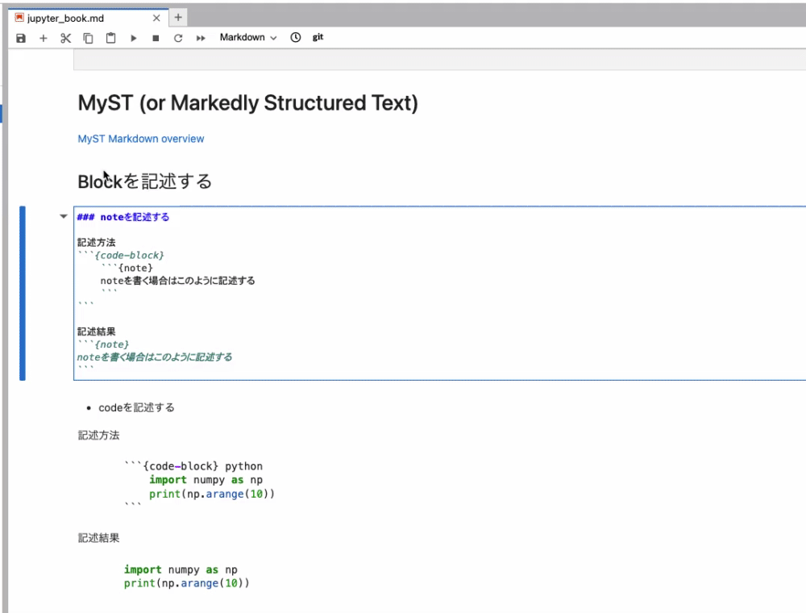

MySTを用いてmarkdownを記述する方法
Contents
10. MySTを用いてmarkdownを記述する方法#
10.1. 事前準備：jupytextを使ってjupyter lab上でプレビュー表示できるようにする#
jupytextにjupytextを有効にするための方法が記載されている. jupytextを有効にすると、以下のようにmarkdown編集結果がliveで確認できる.
{kind=link}
jupytextをpip installする
# bash
pip install jupytext
jupyterlabのsetting -> DocumentManagerのjsonに以下を追加する
{
"defaultViewers": {
"markdown": "Jupytext Notebook",
"myst": "Jupytext Notebook",
"r-markdown": "Jupytext Notebook",
"quarto": "Jupytext Notebook",
"julia": "Jupytext Notebook",
"python": "Jupytext Notebook",
"r": "Jupytext Notebook"
}
}
jupyter labを再起動する
mdファイルをを「Jupytext Notebookで開く」を選択する
{kind=link}
参考
10.2. 基本文法#
10.2.1. Headerを指定する#
このように記述すると、Headerを記述できる
# Heading level 1
## Heading level 2
### Heading level 3
#### Heading level 4
##### Heading level 5
###### Heading level 6
10.2.2. 引用分を記述する#
記述方法
> 引用文
実行結果
引用文
10.2.3. 分離線を記述する#
記述方法
---
実行結果
10.2.4. コメントを記述する#
記述方法
この行に記載された文章はpreviewでは表示される
% この行に記載された文章はpreviewでは表示されない
実行結果
この行に記載された文章はpreviewでは表示される
10.2.5. HTML要素を記述する#
<p>これはHTMLですが、markdownのpreview時には適切にrenderされます</p>
これはHTMLですが、markdownのpreview時には適切にrenderされます
10.2.6. Tableを記述する#
markdownにおいて一般的に表はこのように記述することが多い
記述方法
| a | b |
| :--- | ---: |
| c | d |
記述結果
a |
b |
|---|---|
c |
d |
このように1行で表の内容を記述することもできる
```{list-table}
:header-rows: 1
* - カラム名1
- カラム名2
- カラム名3
* - 1行目のカラム名1の要素
- 1行目のカラム名2の要素
- 1行目のカラム名3の要素
* - 2行目のカラム名1の要素
- 2行目のカラム名2の要素
- 2行目のカラム名3の要素
* - 3行目のカラム名1の要素
- 3行目のカラム名2の要素
- 3行目のカラム名3の要素
* - 4行目のカラム名1の要素
- 4行目のカラム名2の要素
- 4行目のカラム名3の要素
```
実行結果
カラム名1 |
カラム名2 |
カラム名3 |
|---|---|---|
1行目のカラム名1の要素 |
1行目のカラム名2の要素 |
1行目のカラム名3の要素 |
2行目のカラム名1の要素 |
2行目のカラム名2の要素 |
2行目のカラム名3の要素 |
3行目のカラム名1の要素 |
3行目のカラム名2の要素 |
3行目のカラム名3の要素 |
4行目のカラム名1の要素 |
4行目のカラム名2の要素 |
4行目のカラム名3の要素 |
10.3. Blockを記述する#
10.3.1. admonition (意：勧告)を記述する#
記述方法
```{admonition} admonition(タイトルは自由に決められる)
admonitionを書く場合はこのように記述する
```
記述結果
admonition(タイトルは自由に決められる)
admonitionを書く場合はこのように記述する
記述結果
```{note}noteを書く場合はこのように記述する
```
### warningを記述する
記述方法
記述結果
```{warning}warningを書く場合はこのように記述する
```
### Cautionを記述する
記述方法
Caution
cautionを書く場合はこのように記述する
記述結果
```{caution}
cautionを書く場合はこのように記述する
```
### Attentionを記述する
記述方法
Attention
attentionを書く場合はこのように記述する
記述結果
```{attention}
attentionを書く場合はこのように記述する
```
### Tipを記述する
記述方法
記述結果
```{tip}tipを書く場合はこのように記述する
```
### Dangerを記述する
記述方法
記述結果
```{danger}dangerを書く場合はこのように記述する
```
### Errorを記述する
記述方法
記述結果
```{error}errorを書く場合はこのように記述する
```
### Hintを記述する
記述方法
記述結果
```{hint}hintを書く場合はこのように記述する
```
### Importantを記述する
記述方法
記述結果
```{important}importantを書く場合はこのように記述する
```
## Codeを記述する
<!-- #region -->
### ブロックとしてCodeを記述する
記述方法
import numpy as np
print(np.arange(10))
{code-block}を省略することもできる
import numpy as np
print(np.arange(10))
記述結果
```{code-block} python
import numpy as np
print(np.arange(10))
```
```python
import numpy as np
print(np.arange(10))
```
<!-- #endregion -->
### インラインとしてCodeを記述する
記述方法
```
文章の途中でこのように`learning_rate = 0.0025`のようにcodeを記述することができる.
```
記述結果
文章の途中でこのように`learning_rate = 0.0025`のようにcodeを記述することができる.
## 画像を記述する
### Localに保存されている画像を記述する
記述方法
{kind=link}
Fig. 10.1 R2D2はこのような外見のロボットです#
記述結果
```{figure} ../src/r2d2.png
:height: 150px
:name: figure-example
R2D2はこのような外見のロボットです
```
<!-- #region -->
### Linkが分かっている画像を記述する
記述方法
```

```
記述結果

<!-- #endregion -->
## 数式を記述する
### インラインで記述する
記述方法
```
インラインで数式を定義する場合、$で数式を囲む
あるzは$z=\sqrt{x^2+y^2}$のように定義される
```
記述結果
インラインで数式を定義する場合、ドルマークで数式を囲むのみ。
あるzは$z=\sqrt{x^2+y^2}$のように定義される
### ブロックとして数式を記述する
記述方法
\[
z=\sqrt{x^3+y^3}
\]
記述結果
$$
z=\sqrt{x^3+y^3}
$$
[数式の記述方法についてさらに知りたい人向け](https://jupyterbook.org/en/stable/content/math.html)
10.3.2. noteを記述する#
記述方法